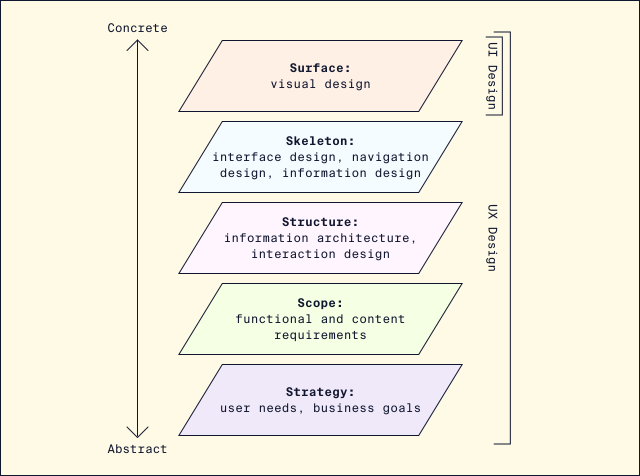
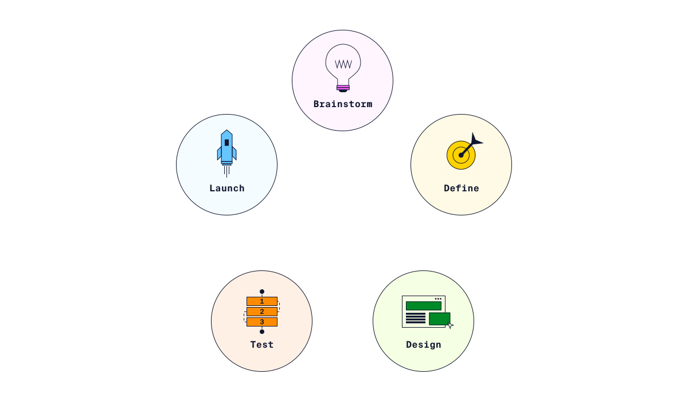
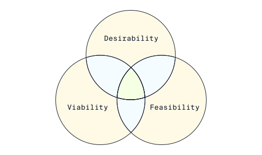
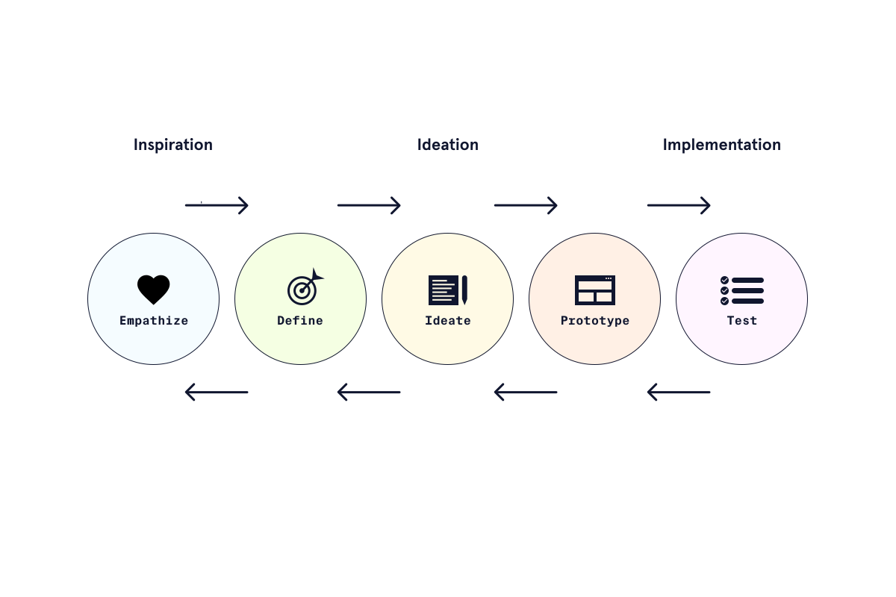
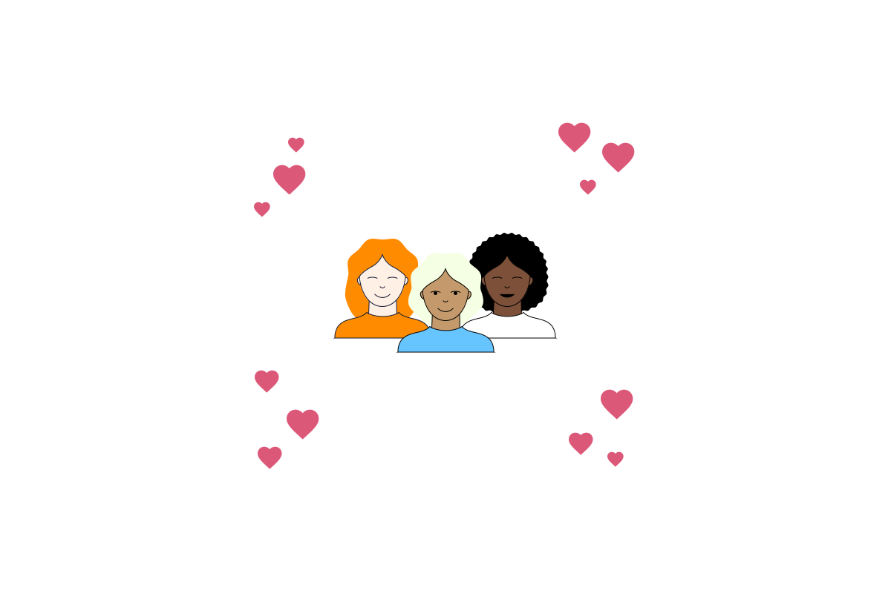

5 elements of ux design

Double Diamond
The two-diamond structure of the diagram illustrates two modes of
thinking that occur during the strategy and execution stages of the
design process.
Divergent thinking explores many possible solutions and
generates novel ideas. Convergent thinking analyzes, filters, and
focuses ideas and leads to decisions.
This model
promotes creativity and innovation while making it clear when
decisions should be made and when teams should commit to a
direction.
A well-executed double diamond process ensures that product
requirements and subsequent design work are focused on user needs.
4 phases

Product Development Life Cycle
The Product Development Life Cycle (PDLC) is a cross-functional,
iterative process, usually involving many stakeholders across an
organization.
The process starts from a problem or pain
point to ensure that product development meets a real user need and
that the whole team is aligned around the same goals.
Stages of PDLC

Typically, testing continues even after the product has launched, and the cycle continues.
Design thinking
Design thinking puts people at the center of every process and
encourages designers to set aside assumptions.
For
example, instead of designing a new children’s toothbrush, a design
thinking Preview: Docs Loading link description approach would
define “how to clean teeth” as the problem and explore a wide range
of solutions.
Like the double diamond model, design thinking offers opportunities
to focus on both divergent and convergent thinking across its steps
to encourage both creativity and problem solving.
Design
thinking lives at the intersection of desirability (people),
viability (business), and feasibility (technology).

Stages of design thinking

User-centered design (UCD)
User-centered design (UCD) puts users at the center of product
development and involves them in the design from the beginning.
Here, design is seen as an iterative process that
incorporates user feedback both during the development process and
after launch.
User-centered design responds to both
contexts of use (such as the user’s environment, technology, and
emotional state) and business goals.

Defining "Good" UX
Facets of a positive user experience:
Useful: fulfills a user’s needs
Usable: easy to use and understand
Desirable: visually attractive and
Findable: easy to navigate and find information
Accessible: users with disabilities can use the product
Credible: the product, company, and services are trustworthy
Valuable: delivers business value

Ten usability heuristics
These heuristics are intended as rules of thumb.
The heuristic evaluation is a relatively quick and flexible method
of usability testing, compared to other methods such as user
testing. During this process, a group of expert evaluators
classifies usability problems based on the ten heuristics.
Heuristic evaluation is highly based on the evaluators’ expertise
and is not a replacement for testing a product with real users.

Introduction to UX-research
User research is the systematic study of target users of a product
or interface to understand their behaviors, needs, and motivations.
User research can happen at every stage of the design process to
inform decisions.
Some researchers specialize in quantitative research methods that can be
measured numerically, such as surveys, analytics, and A/B testing.
Others specialize in qualitative research methods that
examine why users behave the way they do in depth, such as interviews.
It’s important to combine multiple research methods for a full understanding of user behavior:
- Attitudinal methods focus on what users say, through user interviews, surveys, and diary studies.
- Behavioral methods observe user behavior, through ethnographic studies, A/B testing, and user testing.
Tools like personas, user journey maps, and storyboards can be used to advocate for the user and circulate key points from user research across an organization.